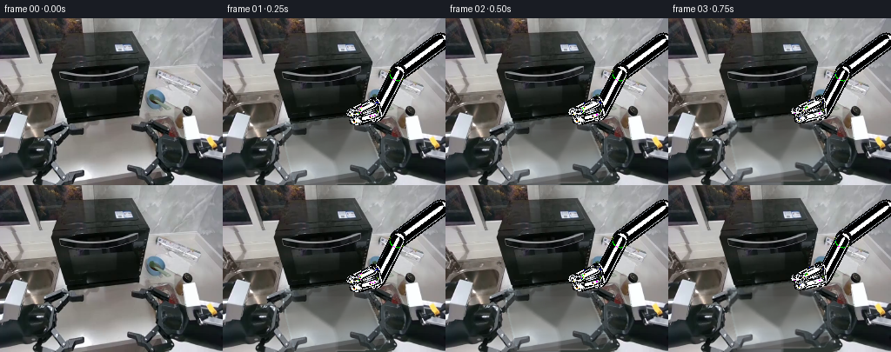
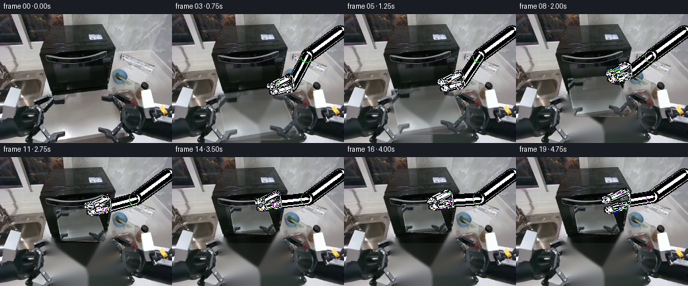
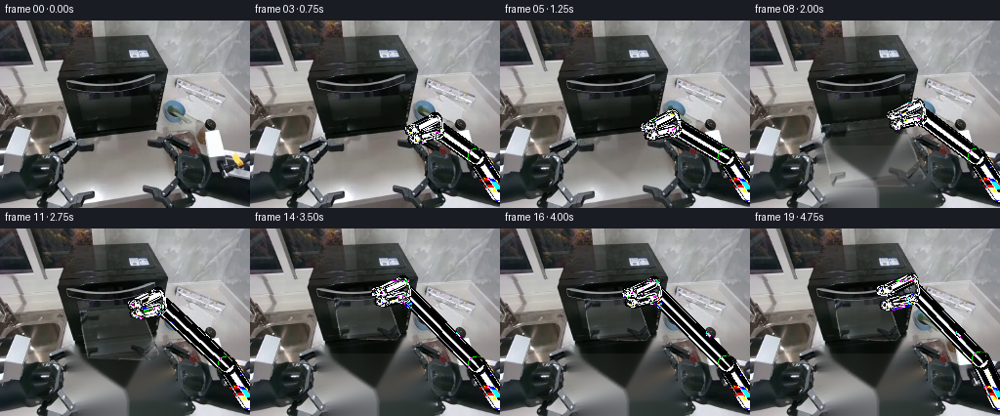
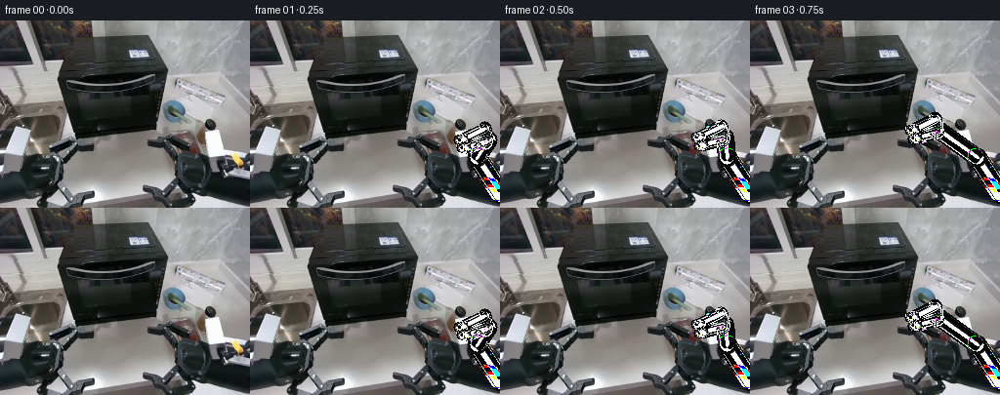

CODING AGENTS AS PIXEL WORLD MODELS
traex/DeepSeek-V4.1-Flash · common50_0006
点击播放 · 原生 RGB 像素
逐轮保存的候选
回放视频、检查图与代码变化。
每份候选均可单独播放。实际图片检查记录在下方工具轨迹中。
候选 01播放与检查图
点击播放 · 原生 RGB 像素


展开代码变化
--- 上一保存版本
+++ 本次保存版本
@@ -0,0 +1,311 @@
+from pathlib import Path
+
+import cv2
+import numpy as np
+from PIL import Image
+
+import artifact_io
+
+
+ROOT = Path(__file__).resolve().parent
+W, H = 256, 192
+FRAMES = 20
+
+
+def smootherstep(value):
+ value = np.clip(value, 0.0, 1.0)
+ return value * value * value * (value * (value * 6.0 - 15.0) + 10.0)
+
+
+def polygon_mask(points, feather=0.0):
+ mask = np.zeros((H, W), np.uint8)
+ cv2.fillPoly(mask, [np.asarray(points, np.int32)], 255)
+ if feather <= 0:
+ return mask.astype(np.float32) / 255.0
+ sigma = max(0.5, feather)
+ soft = cv2.GaussianBlur(mask.astype(np.float32) / 255.0, (0, 0), sigma)
+ return np.clip(soft, 0.0, 1.0)
+
+
+def affine_for(center, target, scale, angle_deg):
+ theta = np.deg2rad(angle_deg)
+ cosine, sine = np.cos(theta) * scale, np.sin(theta) * scale
+ matrix = np.array(
+ [
+ [cosine, -sine, target[0] - cosine * center[0] + sine * center[1]],
+ [sine, cosine, target[1] - sine * center[0] - cosine * center[1]],
+ ],
+ np.float32,
+ )
+ return matrix
+
+
+def transform_point(matrix, point):
+ vector = np.array([point[0], point[1], 1.0])
+ return matrix @ vector
+
+
+def composite(base, color, alpha):
+ alpha = alpha[..., None]
+ return np.clip(base * (1.0 - alpha) + color * alpha, 0, 255)
+
+
+def draw_capsule(mask, p0, p1, radius):
+ p0 = tuple(np.round(p0).astype(int))
+ p1 = tuple(np.round(p1).astype(int))
+ cv2.line(mask, p0, p1, 255, max(1, int(round(radius * 2))), cv2.LINE_AA)
+ cv2.circle(mask, p0, int(round(radius)), 255, -1, cv2.LINE_AA)
+ cv2.circle(mask, p1, int(round(radius)), 255, -1, cv2.LINE_AA)
+
+
+def shaded_segment(canvas, p0, p1, radius, tone=(67, 72, 78)):
+ p0 = np.asarray(p0, np.float32)
+ p1 = np.asarray(p1, np.float32)
+ direction = p1 - p0
+ length = np.linalg.norm(direction)
+ if length < 1e-3:
+ normal = np.array([0.0, -1.0], np.float32)
+ else:
+ normal = np.array([-direction[1], direction[0]], np.float32) / length
+
+ dark = np.zeros((H, W), np.float32)
+ draw_capsule(dark, p0, p1, radius + 2.1)
+
+ body = np.zeros((H, W), np.float32)
+ draw_capsule(body, p0, p1, radius)
+
+ highlight = np.zeros((H, W), np.float32)
+ draw_capsule(highlight, p0 - normal * radius * 0.34, p1 - normal * radius * 0.34, radius * 0.29)
+ highlight = cv2.GaussianBlur(highlight, (0, 0), 0.7)
+
+ shadow = np.zeros((H, W), np.float32)
+ draw_capsule(shadow, p0 + normal * radius * 0.48, p1 + normal * radius * 0.48, radius * 0.31)
+ shadow = cv2.GaussianBlur(shadow, (0, 0), 0.9)
+
+ canvas = composite(canvas, np.array([20, 22, 24], np.float32), dark * 0.78)
+ canvas = composite(canvas, np.array(tone, np.float32), body * 0.95)
+ canvas = composite(canvas, np.array([36, 39, 43], np.float32), shadow * 0.42)
+ canvas = composite(canvas, np.array([154, 160, 165], np.float32), highlight * 0.65)
+ return canvas
+
+
+def draw_joint(canvas, center, radius):
+ center = tuple(np.round(center).astype(int))
+ ring = np.zeros((H, W), np.float32)
+ cv2.circle(ring, center, int(round(radius + 1.5)), 1.0, -1, cv2.LINE_AA)
+ body = np.zeros((H, W), np.float32)
+ cv2.circle(body, center, int(round(radius)), 1.0, -1, cv2.LINE_AA)
+ cap = np.zeros((H, W), np.float32)
+ cv2.circle(cap, (center[0] - 1, center[1] - 1), max(1, int(radius * 0.55)), 1.0, -1, cv2.LINE_AA)
+
+ canvas = composite(canvas, np.array([22, 24, 27], np.float32), ring * 0.9)
+ canvas = composite(canvas, np.array([88, 94, 99], np.float32), body * 0.94)
+ canvas = composite(canvas, np.array([175, 181, 184], np.float32), cap * 0.62)
+ cv2.circle(canvas, center, max(1, int(radius * 0.22)), (38, 41, 44), -1, cv2.LINE_AA)
+ return canvas
+
+
+def add_soft_shadow(base, center, axes, strength):
+ if strength <= 0:
+ return base
+ yy, xx = np.mgrid[:H, :W]
+ cx, cy = center
+ ax, ay = axes
+ distance = ((xx - cx) / ax) ** 2 + ((yy - cy) / ay) ** 2
+ alpha = np.exp(-2.2 * distance).astype(np.float32) * strength
+ alpha *= np.clip((yy - (cy - ay * 0.15)) / max(ay, 1.0), 0.0, 1.0)
+ return composite(base, np.array([18, 20, 20], np.float32), alpha)
+
+
+def build_background(image, container_poly):
+ mask = np.zeros((H, W), np.uint8)
+ cv2.fillPoly(mask, [np.asarray(container_poly, np.int32)], 255)
+ mask = cv2.dilate(mask, np.ones((5, 5), np.uint8), iterations=1)
+
+ # Keep the dark cavity boundary from bleeding into the reconstructed tabletop.
+ inpainted = cv2.inpaint(image, mask, 5, cv2.INPAINT_TELEA)
+
+ lower = np.zeros((H, W), np.float32)
+ cv2.fillPoly(
+ lower,
+ [np.array([[58, 121], [191, 106], [199, 192], [54, 192]], np.int32)],
+ 1.0,
+ )
+ lower = cv2.GaussianBlur(lower, (0, 0), 2.2)
+
+ # A restrained low-frequency tabletop restoration removes inpainting streaks.
+ restored = inpainted.astype(np.float32)
+ for y in range(128, H):
+ row_t = (y - 128) / max(1, H - 1 - 128)
+ target = np.array(
+ [
+ 132 - 22 * row_t,
+ 129 - 19 * row_t,
+ 126 - 18 * row_t,
+ ],
+ np.float32,
+ )
+ row_alpha = 0.11 + 0.06 * row_t
+ restored[y] = restored[y] * (1.0 - row_alpha) + target * row_alpha
+
+ result = image.astype(np.float32) * (1.0 - lower[..., None]) + restored * lower[..., None]
+ return np.clip(result, 0, 255)
+
+
+def make_container_sprite(image, container_poly):
+ body = polygon_mask(container_poly, feather=0.55)
+ hard = polygon_mask(container_poly, feather=0.0)
+ distance = cv2.distanceTransform(hard.astype(np.uint8), cv2.DIST_L2, 5)
+ rim = np.exp(-((distance - 1.25) / 1.05) ** 2).astype(np.float32)
+ rim *= hard
+
+ # The original clear plastic is already optically blended with the table.
+ # Lower its opacity so the destination surface reads through the moving bin.
+ alpha = body * 0.58 + rim * 0.36
+ alpha = np.clip(alpha, 0.0, 0.96)
+
+ rgb = image.astype(np.float32).copy()
+ rgb[..., 0] *= 0.98
+ rgb[..., 1] *= 1.025
+ rgb[..., 2] *= 1.035
+
+ # A faint cool edge makes the transparent silhouette legible over the dark oven.
+ edge_glow = np.clip(rim * 0.18, 0, 1)
+ rgb = composite(rgb, np.array([185, 204, 207], np.float32), edge_glow)
+ return rgb, alpha.astype(np.float32)
+
+
+def warp_sprite(rgb, alpha, matrix):
+ warped_rgb = cv2.warpAffine(
+ rgb,
+ matrix,
+ (W, H),
+ flags=cv2.INTER_LINEAR,
+ borderMode=cv2.BORDER_CONSTANT,
+ borderValue=(0, 0, 0),
+ )
+ warped_alpha = cv2.warpAffine(
+ alpha,
+ matrix,
+ (W, H),
+ flags=cv2.INTER_LINEAR,
+ borderMode=cv2.BORDER_CONSTANT,
+ borderValue=0,
+ )
+ return warped_rgb, np.clip(warped_alpha, 0.0, 1.0)
+
+
+def draw_gripper(base, grip, top_angle, openness, retract):
+ wrist = grip + np.array([13.5 + retract, -7.0 - 0.25 * retract], np.float32)
+ palm = wrist + np.array([6.0, 4.0], np.float32)
+
+ elbow = np.array([201.0 + 0.20 * retract, 62.0 - 0.35 * retract], np.float32)
+ shoulder = np.array([250.0, 26.0], np.float32)
+
+ canvas = base
+ canvas = shaded_segment(canvas, shoulder, elbow, 7.8, tone=(65, 70, 76))
+ canvas = draw_joint(canvas, elbow, 9.0)
+ canvas = shaded_segment(canvas, elbow, palm, 6.7, tone=(76, 81, 87))
+
+ palm_angle = np.deg2rad(top_angle)
+ tangent = np.array([np.cos(palm_angle), np.sin(palm_angle)], np.float32)
+ normal = np.array([-tangent[1], tangent[0]], np.float32)
+
+ palm_center = wrist + tangent * 3.0
+ canvas = shaded_segment(
+ canvas,
+ palm_center - normal * 7.5,
+ palm_center + normal * 7.5,
+ 4.8,
+ tone=(78, 83, 89),
+ )
+ canvas = draw_joint(canvas, wrist, 6.1)
+
+ spread = 4.4 + 3.2 * openness
+ upper_tip = grip - tangent * 5.0 - normal * spread + np.array([retract * 0.55, 0], np.float32)
+ lower_tip = grip - tangent * 3.5 + normal * spread + np.array([retract * 0.55, 0], np.float32)
+ upper_root = palm_center - normal * (spread + 2.4)
+ lower_root = palm_center + normal * (spread + 2.4)
+
+ canvas = shaded_segment(canvas, upper_root, upper_tip, 3.25, tone=(103, 108, 112))
+ canvas = shaded_segment(canvas, lower_root, lower_tip, 3.25, tone=(90, 95, 100))
+ canvas = shaded_segment(canvas, upper_tip, upper_tip - tangent * 5.5, 2.7, tone=(123, 128, 132))
+ canvas = shaded_segment(canvas, lower_tip, lower_tip - tangent * 5.0, 2.7, tone=(103, 108, 112))
+ return canvas
+
+
+def render():
+ source = np.asarray(Image.open(ROOT / "first_frame.png").convert("RGB"), np.uint8)
+ assert source.shape == (H, W, 3)
+
+ container_poly = np.array(
+ [[67.0, 121.5], [158.5, 110.5], [188.0, 179.5], [180.0, 189.0], [82.0, 192.0], [72.0, 151.0]],
+ np.float32,
+ )
+ source_center = np.array([126.0, 151.0], np.float32)
+ target_center = np.array([119.0, 91.0], np.float32)
+ grip_source = np.array([157.5, 112.0], np.float32)
+
+ background = build_background(source, container_poly.astype(np.int32))
+ sprite_rgb, sprite_alpha = make_container_sprite(source.astype(np.float32), container_poly.astype(np.int32))
+
+ frames = []
+ for index in range(FRAMES):
+ if index == 0:
+ frames.append(source.copy())
+ continue
+
+ # Lift, carry, insert, then settle and release.
+ raw = (index - 1) / 14.0
+ progress = smootherstep(raw)
+ if index >= 17:
+ progress = 1.0
+
+ # Small anticipation and a restrained overshoot give the insertion weight.
+ lift = 1.6 * np.sin(np.pi * min(1.0, max(0.0, (index - 1) / 6.0)))
+ overshoot = 0.0
+ if 14 <= index <= 17:
+ overshoot = 1.7 * np.sin(np.pi * (index - 14) / 3.0)
+
+ center = source_center * (1.0 - progress) + target_center * progress
+ center[1] -= lift + overshoot
+ scale = 1.0 - 0.425 * progress
+ angle = 3.4 * progress
+ matrix = affine_for(source_center, center, scale, angle)
+
+ frame = background.copy()
+ shadow_center = center + np.array([3.0, 18.0 * scale + 2.0])
+ shadow_strength = 0.15 * (1.0 - progress) + 0.035 * progress
+ frame = add_soft_shadow(frame, shadow_center, (46.0 * scale, 9.0 * scale), shadow_strength)
+
+ warped_rgb, warped_alpha = warp_sprite(sprite_rgb, sprite_alpha, matrix)
+ frame = composite(frame, warped_rgb, warped_alpha)
+
+ grip = transform_point(matrix, grip_source)
+ retract = 0.0
+ openness = 0.0
+ if index >= 16:
+ release = smootherstep((index - 16) / 3.0)
+ retract = 8.0 * release
+ openness = release
+ frame = draw_gripper(frame, grip, -7.2 + angle, openness, retract)
+
+ # A barely perceptible exposure shift keeps the static scene alive.
+ exposure = 1.0 + 0.006 * np.sin(index * 0.72)
+ frame = np.clip(frame * exposure, 0, 255)
+ frames.append(np.clip(np.rint(frame), 0, 255).astype(np.uint8))
+
+ frames = np.stack(frames)
+ assert frames.shape == (FRAMES, H, W, 3)
+ assert np.array_equal(frames[0], source)
+ return frames
+
+
+def main():
+ frames = render()
+ artifact_io.save(frames, ROOT)
+ np.savez_compressed(ROOT / "candidate_01.npz", frames=frames)
+
+
+if __name__ == "__main__":
+ main()
候选 02播放与检查图
点击播放 · 原生 RGB 像素

展开代码变化
--- 上一保存版本
+++ 本次保存版本
@@ -159,10 +159,12 @@
rim = np.exp(-((distance - 1.25) / 1.05) ** 2).astype(np.float32)
rim *= hard
- # The original clear plastic is already optically blended with the table.
- # Lower its opacity so the destination surface reads through the moving bin.
- alpha = body * 0.58 + rim * 0.36
- alpha = np.clip(alpha, 0.0, 0.96)
+ # Preserve colored contents while allowing the neutral plastic interior to
+ # reveal the surface behind it as the bin is lifted into the oven.
+ saturation = (image.max(axis=2) - image.min(axis=2)) / np.maximum(1.0, image.max(axis=2))
+ interior_alpha = 0.24 + 0.60 * np.clip((saturation - 0.08) / 0.32, 0.0, 1.0)
+ alpha = body * interior_alpha + rim * 0.44
+ alpha = np.clip(alpha, 0.0, 0.97)
rgb = image.astype(np.float32).copy()
rgb[..., 0] *= 0.98
@@ -244,7 +246,8 @@
)
source_center = np.array([126.0, 151.0], np.float32)
target_center = np.array([119.0, 91.0], np.float32)
- grip_source = np.array([157.5, 112.0], np.float32)
+ grip_source = np.array([160.5, 112.5], np.float32)
+ grip_initial = np.array([224.0, 125.0], np.float32)
background = build_background(source, container_poly.astype(np.int32))
sprite_rgb, sprite_alpha = make_container_sprite(source.astype(np.float32), container_poly.astype(np.int32))
@@ -255,17 +258,18 @@
frames.append(source.copy())
continue
- # Lift, carry, insert, then settle and release.
- raw = (index - 1) / 14.0
+ # Approach first, then lift, carry, insert, settle, and release.
+ approach = smootherstep((index - 1) / 3.0)
+ raw = (index - 4) / 11.0
progress = smootherstep(raw)
- if index >= 17:
+ if index >= 15:
progress = 1.0
# Small anticipation and a restrained overshoot give the insertion weight.
- lift = 1.6 * np.sin(np.pi * min(1.0, max(0.0, (index - 1) / 6.0)))
+ lift = 1.4 * np.sin(np.pi * min(1.0, max(0.0, (index - 4) / 7.0)))
overshoot = 0.0
- if 14 <= index <= 17:
- overshoot = 1.7 * np.sin(np.pi * (index - 14) / 3.0)
+ if 12 <= index <= 15:
+ overshoot = 1.5 * np.sin(np.pi * (index - 12) / 3.0)
center = source_center * (1.0 - progress) + target_center * progress
center[1] -= lift + overshoot
@@ -273,25 +277,34 @@
angle = 3.4 * progress
matrix = affine_for(source_center, center, scale, angle)
- frame = background.copy()
- shadow_center = center + np.array([3.0, 18.0 * scale + 2.0])
- shadow_strength = 0.15 * (1.0 - progress) + 0.035 * progress
- frame = add_soft_shadow(frame, shadow_center, (46.0 * scale, 9.0 * scale), shadow_strength)
-
- warped_rgb, warped_alpha = warp_sprite(sprite_rgb, sprite_alpha, matrix)
- frame = composite(frame, warped_rgb, warped_alpha)
-
- grip = transform_point(matrix, grip_source)
+ if index <= 3:
+ frame = source.astype(np.float32)
+ grip = grip_initial * (1.0 - approach) + grip_source * approach
+ else:
+ frame = background.copy()
+ shadow_center = center + np.array([3.0, 18.0 * scale + 2.0])
+ shadow_strength = 0.15 * (1.0 - progress) + 0.035 * progress
+ frame = add_soft_shadow(frame, shadow_center, (46.0 * scale, 9.0 * scale), shadow_strength)
+
+ warped_rgb, warped_alpha = warp_sprite(sprite_rgb, sprite_alpha, matrix)
+ if index == 4:
+ # The first held frame should read as the untouched source bin.
+ early_alpha = np.clip(warped_alpha * 1.45 + polygon_mask(container_poly.astype(np.int32)) * 0.28, 0.0, 0.97)
+ frame = composite(frame, warped_rgb, early_alpha)
+ else:
+ frame = composite(frame, warped_rgb, warped_alpha)
+ grip = transform_point(matrix, grip_source)
+
retract = 0.0
openness = 0.0
- if index >= 16:
- release = smootherstep((index - 16) / 3.0)
- retract = 8.0 * release
+ if index >= 15:
+ release = smootherstep((index - 15) / 4.0)
+ retract = 9.0 * release
openness = release
frame = draw_gripper(frame, grip, -7.2 + angle, openness, retract)
# A barely perceptible exposure shift keeps the static scene alive.
- exposure = 1.0 + 0.006 * np.sin(index * 0.72)
+ exposure = 1.0 + 0.004 * np.sin(index * 0.72)
frame = np.clip(frame * exposure, 0, 255)
frames.append(np.clip(np.rint(frame), 0, 255).astype(np.uint8))
候选 03播放与检查图
候选 04播放与检查图
点击播放 · 原生 RGB 像素


展开代码变化
--- 上一保存版本
+++ 本次保存版本
@@ -201,8 +201,8 @@
wrist = grip + np.array([13.5 + retract, -7.0 - 0.25 * retract], np.float32)
palm = wrist + np.array([6.0, 4.0], np.float32)
- elbow = np.array([201.0 + 0.20 * retract, 62.0 - 0.35 * retract], np.float32)
- shoulder = np.array([250.0, 26.0], np.float32)
+ elbow = np.array([232.0 + 0.45 * retract, 140.0 - 0.55 * retract], np.float32)
+ shoulder = np.array([257.0, 178.0], np.float32)
canvas = base
canvas = shaded_segment(canvas, shoulder, elbow, 7.8, tone=(65, 70, 76))
@@ -277,7 +277,7 @@
angle = 3.4 * progress
matrix = affine_for(source_center, center, scale, angle)
- if index <= 3:
+ if index <= 4:
frame = source.astype(np.float32)
grip = grip_initial * (1.0 - approach) + grip_source * approach
else:
@@ -287,12 +287,11 @@
frame = add_soft_shadow(frame, shadow_center, (46.0 * scale, 9.0 * scale), shadow_strength)
warped_rgb, warped_alpha = warp_sprite(sprite_rgb, sprite_alpha, matrix)
- if index == 4:
- # The first held frame should read as the untouched source bin.
- early_alpha = np.clip(warped_alpha * 1.45 + polygon_mask(container_poly.astype(np.int32)) * 0.28, 0.0, 0.97)
- frame = composite(frame, warped_rgb, early_alpha)
- else:
- frame = composite(frame, warped_rgb, warped_alpha)
+ frame = composite(frame, warped_rgb, warped_alpha)
+ if index <= 7:
+ # Gradually reveal the reconstructed tabletop under the bin.
+ removal = smootherstep((index - 4) / 3.0)
+ frame = source.astype(np.float32) * (1.0 - removal) + frame * removal
grip = transform_point(matrix, grip_source)
retract = 0.0
可观测工具轨迹
实际执行的命令与返回图片。
命令 1exit 0
/bin/bash -c "pwd && rg --files -g 'prompt.txt' -g 'GENERATION_RULES.md' -g 'first_frame.png' -g '*.py' -g '*.sh' -g '*.md' | sort"
命令 2exit 0
/bin/bash -c "git status --short && find . -maxdepth 2 -type f -printf '%p %s bytes\\n' | sort | head -100"
命令 3exit 0
/bin/bash -c "cat prompt.txt && printf '\\n--- RULES ---\\n' && cat GENERATION_RULES.md"
命令 4exit 0
/bin/bash -c "cat task_spec.json && printf '\\n--- artifact_io.py ---\\n' && sed -n '1,240p' artifact_io.py"
命令 5exit 0
/bin/bash -c "python - <<'PY'
from PIL import Image
im=Image.open('first_frame.png')
print(im.mode, im.size, im.getbands())
print(im.getextrema())
PY
which ffmpeg || true
ffmpeg -version | head -3 || true"命令 6exit 0
/bin/bash -c "python - <<'PY'
from PIL import Image
import numpy as np
from collections import Counter
im=np.asarray(Image.open('first_frame.png'))
# dominant quantized colors
q=(im//16)*16+8
colors=q.reshape(-1,3)
c=Counter(map(tuple,colors))
for col,n in c.most_common(30):
print(col,n,round(n/colors.shape[0]*100,1))
PY"命令 7exit 0
/bin/bash -c "python - <<'PY'
from PIL import Image
import numpy as np
im=np.asarray(Image.open('first_frame.png')).astype(float)
g=im.mean(2)
# ascii 64x48 with adaptive chars
chars=' .,:;irsXA253hMHGS#9B&@'
for y in range(0,192,4):
row=''
for x in range(0,256,4):
v=g[y:y+4,x:x+4].mean()
row+=chars[min(len(chars)-1,int(v/256*len(chars)))]
print(f'{y:3d} '+row)
PY"命令 8exit 0
/bin/bash -c "python - <<'PY'
from PIL import Image
import numpy as np
im=np.asarray(Image.open('first_frame.png'))
# hue/sat categories by 8x8 blocks, label by dominant simple color
for y in range(0,192,8):
row=''
for x in range(0,256,8):
p=im[y:y+8,x:x+8].reshape(-1,3).mean(0)
r,g,b=p
mx=max(p); mn=min(p)
if mx<45: ch='K'
elif mx-mn<20: ch='W' if mx>185 else ('G' if mx>95 else 'D')
elif r>g*1.25 and r>b*1.25: ch='R'
elif g>r*1.2 and g>b*1.1: ch='G'
elif b>r*1.2 and b>g*1.1: ch='B'
elif r>g*1.1 and g>b*1.15: ch='Y'
elif r>b*1.2 and g>b*1.05: ch='O'
else: ch='?'
row+=ch
print(f'{y:3d} '+row)
PY"命令 9exit 0
/bin/bash -c "python - <<'PY'
from PIL import Image
import numpy as np
im=np.asarray(Image.open('first_frame.png')).astype(float)
# print mean rgb in 16x16 blocks and dominant exact colors
for y in range(0,192,16):
print('Y',y)
for x in range(0,256,32):
p=im[y:y+16,x:x+32].mean((0,1)).round().astype(int)
print(f'{x:3d}:{p[0]:3d},{p[1]:3d},{p[2]:3d}',end=' ')
print()
PY"命令 10exit 0
/bin/bash -c "python - <<'PY' mods=['cv2','scipy','skimage','matplotlib','imageio','av'] for m in mods: try: mod=__import__(m) print(m,'ok',getattr(mod,'__version__','')) except Exception as e: print(m,'no',type(e).__name__) PY"
命令 11exit 0
/bin/bash -c "python - <<'PY'
from PIL import Image
import numpy as np
im=np.asarray(Image.open('first_frame.png')).astype(float)
g=im.mean(2)
chars=' .:-=+*#%@'
# print halves, 2x2 blocks with axes
for side,(x0,x1) in enumerate([(0,128),(128,256)]):
print('\\nLEFT' if side==0 else '\\nRIGHT')
print(' '+''.join(str((x//10)%10) for x in range(x0,x1,2)))
print(' '+''.join(str(x%10) for x in range(x0,x1,2)))
for y in range(0,192,2):
row=''
for x in range(x0,x1,2):
v=np.median(g[y:y+2,x:x+2])
row+=chars[min(9,int(v/256*10))]
print(f'{y:3d} '+row)
PY"命令 12exit 0
/bin/bash -c "python - <<'PY'
import cv2, numpy as np
im=cv2.imread('first_frame.png')
g=cv2.cvtColor(im,cv2.COLOR_BGR2GRAY)
# line segment detector
lsd=cv2.createLineSegmentDetector(cv2.LSD_REFINE_STD)
lines, widths, prec, nfa=lsd.detect(g)
out=[]
for i,l in enumerate(lines[:,0,:]):
x1,y1,x2,y2=map(float,l); length=((x2-x1)**2+(y2-y1)**2)**.5
ang=np.degrees(np.arctan2(y2-y1,x2-x1))
out.append((length,(x1,y1,x2,y2),ang))
for length,l,a in sorted(out,reverse=True)[:100]:
print(f'{length:6.1f} ({l[0]:6.1f},{l[1]:6.1f})-({l[2]:6.1f},{l[3]:6.1f}) {a:7.1f}')
PY"命令 13exit 0
/bin/bash -c "python - <<'PY'
from PIL import Image
import numpy as np
im=np.asarray(Image.open('first_frame.png')).astype(float)
g=im.mean(2)
# edges strong around y 100-160 right side, print exact grayscale matrix as hex-ish char 128..256 step 1 maybe downsample 1
chars=' .,:;irsXA253hMHGS#9B&@'
for y in range(40,170,2):
row=''
for x in range(140,240,2):
v=g[y:y+2,x:x+2].mean()
row+=chars[min(len(chars)-1,int(v/256*len(chars)))]
print(f'{y:3d} '+row)
PY"命令 14exit 0
/bin/bash -c "python - <<'PY'
import cv2, numpy as np
im=cv2.imread('first_frame.png')
g=cv2.cvtColor(im,cv2.COLOR_BGR2GRAY)
# Canny, show 4x4 aggregation
for lo,hi in [(30,80),(60,140)]:
e=cv2.Canny(g,lo,hi)
print('\\nCANNY',lo,hi)
for y in range(0,192,4):
row=''
for x in range(0,256,4):
v=e[y:y+4,x:x+4].sum()/16
row += ' .:+*#@'[min(6,int(v/255*7))]
print(f'{y:3d} '+row)
PY"命令 15exit 0
/bin/bash -c "python - <<'PY'
import cv2, numpy as np
im=cv2.imread('first_frame.png')
# image patches as arrays inspect contours / keypoint metadata
for name, box in [('container',(55,112,95,162)),('oven',(160,52,230,140)),('arm',(0,0,90,120)),('right',(160,0,256,140))]:
x0,y0,x1,y1=box; p=im[y0:y1,x0:x1]
print(name,box,p.mean((0,1)),p.min(),p.max())
# Sobel strong orientation count
PY"命令 16exit 0
/bin/bash -c "python - <<'PY'
import cv2,numpy as np
from PIL import Image
im=cv2.imread('first_frame.png')[:,:,::-1]
h,w=im.shape[:2]
# kmeans colors
X=im.reshape(-1,3).astype(np.float32)
crit=(cv2.TERM_CRITERIA_EPS+cv2.TERM_CRITERIA_MAX_ITER,50,.2)
_,lab,cen=cv2.kmeans(X,16,None,crit,5,cv2.KMEANS_PP_CENTERS)
cen=cen.round().astype(int)
counts=np.bincount(lab.ravel(),minlength=16)
order=np.argsort(counts)[::-1]
for i in order:
print(i,counts[i],cen[i])
print('\\nlabels 32x24 (dominant in 8x8)')
ch='0123456789ABCDEF'
for y in range(0,192,8):
row=''
for x in range(0,256,8):
ids=lab.reshape(h,w)[y:y+8,x:x+8].ravel()
row+=ch[np.bincount(ids,minlength=16).argmax()]
print(row)
PY"命令 17exit 0
/bin/bash -c "python - <<'PY'
from PIL import Image
import numpy as np
im=np.asarray(Image.open('first_frame.png'))
# inspect channel values at selected points
pts=[(60,60),(20,60),(45,100),(70,130),(80,150),(100,140),(120,130),(150,100),(180,80),(200,70),(210,90),(220,110),(205,125),(185,135),(170,150),(130,160),(100,170),(160,100),(140,120),(140,140),(150,60),(170,60),(180,60)]
for x,y in pts: print((x,y),im[y,x])
PY"命令 18exit 0
/bin/bash -c "python - <<'PY'
from PIL import Image
import numpy as np
im=np.asarray(Image.open('first_frame.png')).astype(float)
for y in [0,10,20,30,40,50,60,70,80,90,100,110,120,130,140,150,160,170,180,190]:
# mean every 8 px
print('y',y, ' '.join(f'{im[y,x:x+8].mean():3.0f}' for x in range(0,256,8)))
print('\\nCOLUMNS')
for x in [0,8,16,24,32,40,48,56,64,72,80,88,96,104,112,120,128,136,144,152,160,168,176,184,192,200,208,216,224,232,240,248]:
print('x',x, ' '.join(f'{im[y:y+8,x].mean():3.0f}' for y in range(0,192,8)))
PY"命令 19exit 0
/bin/bash -c "python - <<'PY'
from PIL import Image
import numpy as np
im=np.asarray(Image.open('first_frame.png')).astype(float)
# color detail for 50-105 x 105-165, 1 px; ascii with channel-coded symbols maybe save crops
for box,name in [((45,95,110,170),'container'),((145,45,235,145),'oven'),((0,0,90,130),'leftarm'),((0,110,170,192),'lower')]:
x0,y0,x1,y1=box
Image.fromarray(im[y0:y1,x0:x1].astype(np.uint8)).resize(((x1-x0)*4,(y1-y0)*4),Image.Resampling.NEAREST).save(name+'_crop.png')
print(name,'saved')
PY"命令 20exit 0
/bin/bash -c "python - <<'PY'
from PIL import Image
import numpy as np
im=np.asarray(Image.open('first_frame.png')).astype(float)
# ANSI color blocks to terminal? use colored background with 2 spaces, half resolution 128x96
# truecolor ANSI
for y in range(0,192,2):
s=''
for x in range(0,256,2):
r,g,b=im[y:y+2,x:x+2].mean((0,1)).astype(int)
s+=f'\\x1b[48;2;{r};{g};{b}m '
s+='\\x1b[0m'
print(s)
PY"命令 21exit 0
/bin/bash -c "python - <<'PY'
from PIL import Image
import numpy as np
im=np.asarray(Image.open('first_frame.png')).astype(float)
g=im.mean(2)
chars=' .,:;irsXA253hMHGS#9B&@'
print(' '+''.join(str((x//10)%10) for x in range(45,185,2)))
print(' '+''.join(str(x%10) for x in range(45,185,2)))
for y in range(105,171,2):
row=''
for x in range(45,185,2):
v=g[y:y+2,x:x+2].mean()
row+=chars[min(len(chars)-1,int(v/256*len(chars)))]
print(f'{y:3d} '+row)
PY"命令 22exit 0
/bin/bash -c "python - <<'PY'
import cv2,numpy as np
im=cv2.imread('first_frame.png')
g=cv2.cvtColor(im,cv2.COLOR_BGR2GRAY)
# dark region contours under thresholds
for t in [20,30,40,50,60,80,100]:
m=(g<t).astype(np.uint8)*255
n,lab,stats,cens=cv2.connectedComponentsWithStats(m,8)
print('\\nthreshold',t)
for x,y,w,h,a in sorted(stats[1:],key=lambda z:z[4],reverse=True)[:15]:
if a>100: print('bbox',x,y,w,h,'area',a)
PY"命令 23exit 0
/bin/bash -c "python - <<'PY'
from PIL import Image
import numpy as np
im=np.asarray(Image.open('first_frame.png')).astype(float)
# classify pixels by simple color/brightness, print 1-char every 2x2 for 0..192 x 0..256
# hue category + brightness
for y in range(0,192,3):
row=''
for x in range(0,256,2):
p=im[y:y+3,x:x+2].mean((0,1)); r,g,b=p; mx=p.max(); mn=p.min()
if mx<25: ch='@'
elif mx<45: ch='#'
elif mx<70: ch='H'
elif mx<100: ch='M'
elif mx<130: ch='S'
elif mx<160: ch='G'
elif mx<190: ch='2'
elif mx<220: ch='5'
elif mx<240: ch='A'
else: ch='W'
# tint markers?
if mx-mn>15:
if r-mn>mx*.12 and g-mn>mx*.1: ch='y' if mx<190 else 'Y'
elif r-mn>mx*.12: ch='r' if mx<190 else 'R'
elif g-mn>mx*.08: ch='g' if mx<190 else 'G'
elif b-mn>mx*.08: ch='b' if mx<190 else 'B'
row+=ch
print(f'{y:3d} '+row)
PY"命令 24exit 0
/bin/bash -c "python - <<'PY'
from PIL import Image
import numpy as np
im=np.asarray(Image.open('first_frame.png')).astype(float)
# categorize pixel patches by brightness and hue; output 4x4, 64 cols
for y in range(0,192,4):
row=''
for x in range(0,256,4):
p=im[y:y+4,x:x+4].mean((0,1)); r,g,b=p; mx=p.max(); mn=p.min(); sat=mx-mn
if mx<20: ch='@'
elif mx<40: ch='#'
elif mx<65: ch='H'
elif mx<90: ch='M'
elif mx<115: ch='S'
elif mx<140: ch='G'
elif mx<165: ch='2'
elif mx<190: ch='5'
elif mx<215: ch='A'
elif mx<235: ch='W'
else: ch='Z'
# override hues: r=red, y=yellow, b=blue/green
if sat>20 and mx>50:
if r>=g and r>=b and r-b>15: ch='r' if mx<160 else 'R'
elif g>=r and g>=b and g-b>10: ch='g' if mx<160 else 'G'
elif b>=r and b>=g and b-r>12: ch='b' if mx<160 else 'B'
row+=ch
print(f'{y:3d} '+row)
PY"命令 25exit 0
/bin/bash -c "python - <<'PY'
from PIL import Image
import numpy as np
im=np.asarray(Image.open('first_frame.png'))
# quantized labels with actual palette and coordinates; maybe foreground object is lower-left transparent bin around x55-150,y115-165
# list exact pixel rows R,G,B at sampled boundary points
for y in range(110,166,4):
print('\\ny=',y)
for x in range(48,154,6):
r,g,b=im[y,x]
print(f'{x}:{r:02x}{g:02x}{b:02x}',end=' ')
print()
PY"命令 26exit 0
/bin/bash -c "python - <<'PY'
import cv2,numpy as np
im=cv2.imread('first_frame.png')
# circles hough at different scales
for p2 in [15,20,25,30]:
c=cv2.HoughCircles(cv2.cvtColor(im,cv2.COLOR_BGR2GRAY),cv2.HOUGH_GRADIENT,dp=1,minDist=15,param1=50,param2=p2,minRadius=5,maxRadius=50)
print('p2',p2)
if c is not None:
for x,y,r in c[0][:20]: print(round(x),round(y),round(r))
PY"命令 27exit 0
/bin/bash -c "python - <<'PY'
from PIL import Image
import numpy as np
im=np.asarray(Image.open('first_frame.png'))
# print patch grayscale 80x60 at 1px with compact chars around container / gripper
g=im.mean(2); chars=' .:-=+*#%@'
for y in range(108,168,1):
row=''
for x in range(45,125,1):
v=g[y,x]
row+=chars[min(9,int(v/256*10))]
print(f'{y:3d} '+row)
PY"命令 28exit 0
/bin/bash -c "python - <<'PY'
from PIL import Image
import numpy as np
im=np.asarray(Image.open('first_frame.png')).astype(float)
# print grayscale with 1px sampling around right arm/oven x120-256 y0-125 at 2px
g=im.mean(2); chars=' .:-=+*#%@'
for y in range(0,128,2):
row=''
for x in range(120,256,2):
v=g[y:y+2,x:x+2].mean()
row+=chars[min(9,int(v/256*10))]
print(f'{y:3d} '+row)
PY"命令 29exit 0
/bin/bash -c "python - <<'PY'
import cv2,numpy as np
im=cv2.imread('first_frame.png'); g=cv2.cvtColor(im,cv2.COLOR_BGR2GRAY)
lsd=cv2.createLineSegmentDetector(cv2.LSD_REFINE_STD)
lines=lsd.detect(g)[0]
out=[]
for l in lines[:,0,:]:
x1,y1,x2,y2=map(float,l); L=np.hypot(x2-x1,y2-y1); ang=np.degrees(np.arctan2(y2-y1,x2-x1))
# segments intersecting lower container box
if L>10 and ((40<=x1<=180 and 95<=y1<=180) or (40<=x2<=180 and 95<=y2<=180)):
out.append((L,(x1,y1,x2,y2),ang))
for L,l,a in sorted(out,reverse=True): print(f'{L:5.1f} ({l[0]:5.1f},{l[1]:5.1f})-({l[2]:5.1f},{l[3]:5.1f}) {a:6.1f}')
PY"命令 30exit 0
/bin/bash -c "python - <<'PY'
import cv2, numpy as np
im=cv2.imread('first_frame.png'); g=cv2.cvtColor(im,cv2.COLOR_BGR2GRAY).astype(float)
gx=cv2.Sobel(g,cv2.CV_64F,1,0,ksize=3); gy=cv2.Sobel(g,cv2.CV_64F,0,1,ksize=3); m=np.hypot(gx,gy)
chars=' .:-=+*#%@'
print(' '+''.join(str((x//10)%10) for x in range(30,191,2)))
print(' '+''.join(str(x%10) for x in range(30,191,2)))
for y in range(100,191,2):
row=''
for x in range(30,191,2):
v=m[y:y+2,x:x+2].mean()
row+=chars[min(9,int(v/180*10))]
print(f'{y:3d} '+row)
PY"命令 31exit 0
/bin/bash -c "python - <<'PY'
import cv2,numpy as np
im=cv2.imread('first_frame.png'); g=cv2.cvtColor(im,cv2.COLOR_BGR2GRAY).astype(np.float32)
# multiscale template candidates for front clear container? print local statistics / strongest connected contours
for t in [80,100,120,140,160]:
edges=cv2.Canny(g.astype(np.uint8),t,t*2)
n,lab,stats,c=cv2.connectedComponentsWithStats(edges,8)
print('\\nCanny',t)
for x,y,w,h,a in sorted(stats[1:],key=lambda z:z[4],reverse=True)[:20]:
if a>30: print((x,y,w,h,a))
PY"命令 32exit 0
/bin/bash -c "python - <<'PY'
from PIL import Image
import numpy as np
im=np.asarray(Image.open('first_frame.png')).astype(float)
# print H,S,V categories to better locate colored object. Use HSV
import cv2
hsv=cv2.cvtColor(im.astype(np.uint8),cv2.COLOR_RGB2HSV)
# high saturation pixels grouped
mask=(hsv[:,:,1]>35)&(hsv[:,:,2]>40)
n,lab,stats,c=cv2.connectedComponentsWithStats(mask.astype(np.uint8),8)
for x,y,w,h,a in sorted(stats[1:],key=lambda z:z[4],reverse=True)[:30]:
if a>20:
print((x,y,w,h,a),'mean hsv',hsv[y:y+h,x:x+w][mask[y:y+h,x:x+w]].mean(0))
PY"命令 33exit 0
/bin/bash -c "python - <<'PY'
from PIL import Image
import numpy as np
im=np.asarray(Image.open('first_frame.png')).astype(int)
g=im.mean(2); chars=' .:-=+*#%@'
print(' '+''.join(str((x//10)%10) for x in range(140,231,1)))
print(' '+''.join(str(x%10) for x in range(140,231,1)))
for y in range(95,151):
row=''
for x in range(140,231):
v=g[y,x]
row+=chars[min(9,int(v/256*10))]
print(f'{y:3d} '+row)
PY"命令 34exit 0
/bin/bash -c "python - <<'PY'
from PIL import Image
import numpy as np
im=np.asarray(Image.open('first_frame.png')).astype(float)
g=im.mean(2); chars=' .:-=+*#%@'
print(' '+''.join(str((x//10)%10) for x in range(55,126,1)))
print(' '+''.join(str(x%10) for x in range(55,126,1)))
for y in range(115,181):
row=''
for x in range(55,126):
v=g[y,x]
row+=chars[min(9,int(v/256*10))]
print(f'{y:3d} '+row)
PY"命令 35exit 0
/bin/bash -c "python - <<'PY'
import cv2,numpy as np
im=cv2.imread('first_frame.png'); g=cv2.cvtColor(im,cv2.COLOR_BGR2GRAY).astype(float)
# darkness mask values around central area; show exact means and masks
for t in [60,80,100,120,140]:
m=(g<t).astype(np.uint8)
# rows and cols sums
print('t',t,'total',m.sum())
print('row peaks',sorted(enumerate(m.sum(1)),key=lambda z:z[1],reverse=True)[:10])
print('col peaks',sorted(enumerate(m.sum(0)),key=lambda z:z[1],reverse=True)[:10])
PY"命令 36exit 0
/bin/bash -c "python - <<'PY'
from PIL import Image
import numpy as np
im=np.asarray(Image.open('first_frame.png')).astype(float); g=im.mean(2); chars=' .:-=+*#%@'
print(' '+''.join(str((x//10)%10) for x in range(0,121,1)))
print(' '+''.join(str(x%10) for x in range(0,121,1)))
for y in range(0,125,1):
row=''
for x in range(0,121):
v=g[y,x]
row+=chars[min(9,int(v/256*10))]
print(f'{y:3d} '+row)
PY"命令 37exit 0
/bin/bash -c "python - <<'PY'
from PIL import Image
import numpy as np
im=np.asarray(Image.open('first_frame.png')).astype(float); g=im.mean(2); chars=' .:-=+*#%@'
# 0..100 x 160..192
print(' '+''.join(str((x//10)%10) for x in range(0,101,1)))
print(' '+''.join(str(x%10) for x in range(0,101,1)))
for y in range(155,192):
row=''
for x in range(0,101):
v=g[y,x]
row+=chars[min(9,int(v/256*10))]
print(f'{y:3d} '+row)
PY"命令 38exit 0
/bin/bash -c "python - <<'PY'
from PIL import Image
import numpy as np
im=np.asarray(Image.open('first_frame.png')).astype(float); g=im.mean(2); chars=' .:-=+*#%@'
# print 0..90 y120..192 maybe see container / gripper
for y in range(120,192,1):
row=''
for x in range(0,91,1):
v=g[y,x]
row+=chars[min(9,int(v/256*10))]
print(f'{y:3d} '+row)
PY"命令 39exit 0
/bin/bash -c "python - <<'PY'
import cv2,numpy as np
im=cv2.imread('first_frame.png'); g=cv2.cvtColor(im,cv2.COLOR_BGR2GRAY)
# detect large Hough lines across all
edges=cv2.Canny(g,50,120)
lines=cv2.HoughLinesP(edges,1,np.pi/180,threshold=30,minLineLength=25,maxLineGap=8)
out=[]
for x1,y1,x2,y2 in lines[:,0]:
L=np.hypot(x2-x1,y2-y1); a=np.degrees(np.arctan2(y2-y1,x2-x1))
out.append((L,x1,y1,x2,y2,a))
for z in sorted(out,reverse=True)[:100]: print('%5.1f (%3d,%3d)-(%3d,%3d) %6.1f'%z)
PY"命令 40exit 0
/bin/bash -c "python - <<'PY'
import cv2,numpy as np
im=cv2.imread('first_frame.png'); g=cv2.cvtColor(im,cv2.COLOR_BGR2GRAY)
for t in [130,160,190,220]:
m=(g>t).astype(np.uint8)
n,lab,stats,c=cv2.connectedComponentsWithStats(m,8)
print('\\nTHR',t)
for x,y,w,h,a in sorted(stats[1:],key=lambda z:z[4],reverse=True)[:20]:
if a>80: print((x,y,w,h,a))
PY"命令 41exit 0
/bin/bash -c "python - <<'PY'
import cv2,numpy as np
im=cv2.imread('first_frame.png'); g=cv2.cvtColor(im,cv2.COLOR_BGR2GRAY)
# canny contours in container region and output contour bounding shapes
roi=g[95:190,45:180]
e=cv2.Canny(roi,50,120)
contours,h=cv2.findContours(e,cv2.RETR_LIST,cv2.CHAIN_APPROX_SIMPLE)
out=[]
for c in contours:
x,y,w,hh=cv2.boundingRect(c); area=cv2.contourArea(c); L=cv2.arcLength(c,True)
if w>8 or hh>8: out.append((cv2.contourArea(c),x+45,y+95,w,hh,L))
for z in sorted(out,reverse=True)[:60]: print(z)
PY"命令 42exit 0
/bin/bash -c "python - <<'PY'
import cv2,numpy as np
im=cv2.imread('first_frame.png'); g=cv2.cvtColor(im,cv2.COLOR_BGR2GRAY)
# Hough lines near expected container top edge
e=cv2.Canny(g,40,100)
lines=cv2.HoughLinesP(e,1,np.pi/360,threshold=10,minLineLength=8,maxLineGap=3)
out=[]
for x1,y1,x2,y2 in lines[:,0]:
if 40<=min(x1,x2) and max(x1,x2)<=180 and 90<=min(y1,y2) and max(y1,y2)<=185:
L=np.hypot(x2-x1,y2-y1); a=np.degrees(np.arctan2(y2-y1,x2-x1))
out.append((L,x1,y1,x2,y2,a))
for z in sorted(out,reverse=True)[:100]: print('%5.1f (%3d,%3d)-(%3d,%3d) %6.1f'%z)
PY"命令 43exit 0
/bin/bash -c "python - <<'PY'
from PIL import Image
import numpy as np
im=np.asarray(Image.open('first_frame.png')).astype(float); g=im.mean(2); chars=' .:-=+*#%@'
# 90..180 y 90..125 detailed
print(' '+''.join(str((x//10)%10) for x in range(90,181,1)))
print(' '+''.join(str(x%10) for x in range(90,181,1)))
for y in range(90,126):
row=''
for x in range(90,181):
v=g[y,x]
row+=chars[min(9,int(v/256*10))]
print(f'{y:3d} '+row)
PY"命令 44exit 0
/bin/bash -c "python - <<'PY'
from PIL import Image
import numpy as np
im=np.asarray(Image.open('first_frame.png')).astype(float); g=im.mean(2); chars=' .:-=+*#%@'
print(' '+''.join(str((x//10)%10) for x in range(180,256,1)))
print(' '+''.join(str(x%10) for x in range(180,256,1)))
for y in range(45,151,1):
row=''
for x in range(180,256):
v=g[y,x]
row+=chars[min(9,int(v/256*10))]
print(f'{y:3d} '+row)
PY"命令 45exit 0
/bin/bash -c 'python generate.py'
命令 46exit 0
/bin/bash -c "python - <<'PY'
from PIL import Image
import numpy as np, os
fs=np.load('candidate_01.npz')['frames']
print('shape',fs.shape,fs.dtype)
print('frame0 identical',np.array_equal(fs[0],np.asarray(Image.open('first_frame.png'))))
for i in range(19):
d=np.abs(fs[i+1].astype(int)-fs[i].astype(int))
print(i, 'mean',round(d.mean(),2),'p99',np.percentile(d,99),'changed',round((d.max(2)>10).mean()*100,1),'bright',round(fs[i+1].mean(),1))
# quick content crops resized and sheet contact
idx=[0,3,6,9,12,15,19]
sheet=Image.new('RGB',(256*4,(192+18)*2),(20,22,26))
from PIL import ImageDraw
dr=ImageDraw.Draw(sheet)
for j,i in enumerate(idx):
x=(j%4)*256;y=(j//4)*210
dr.text((x+5,y+3),f'frame {i:02d}',fill='white')
sheet.paste(Image.fromarray(fs[i]),(x,y+18))
sheet.save('candidate_01_sheet.png')
PY"命令 47exit 0
/bin/bash -c "python - <<'PY'
from PIL import Image
im=Image.open('candidate_01_sheet.png')
print(im.size)
PY"命令 48exit 0
/bin/bash -c "python - <<'PY'
from PIL import Image
import numpy as np, cv2
im=np.asarray(Image.open('first_frame.png'))
hsv=cv2.cvtColor(im,cv2.COLOR_RGB2HSV)
# one char per pixel; brightness + hue
print(' '+''.join(str((x//10)%10) for x in range(150,256,1)))
print(' '+''.join(str(x%10) for x in range(150,256,1)))
for y in range(85,192):
row=''
for x in range(150,256):
h,s,v=map(int,hsv[y,x])
if s<22:
ch=' ' if v<25 else ('.' if v<55 else (':' if v<95 else ('+' if v<135 else ('*' if v<175 else ('#' if v<215 else ('%' if v<240 else '@'))))))
else:
if h<8 or h>=170: ch='R' if v>100 else 'r'
elif h<22: ch='O' if v>100 else 'o'
elif h<38: ch='Y' if v>100 else 'y'
elif h<55: ch='L' if v>100 else 'l'
elif h<85: ch='G' if v>100 else 'g'
elif h<115: ch='C' if v>100 else 'c'
elif h<145: ch='B' if v>100 else 'b'
else: ch='P' if v>100 else 'p'
row+=ch
print(f'{y:3d} '+row)
PY"命令 49exit 0
/bin/bash -c "python generate.py && python - <<'PY'
from PIL import Image,ImageDraw
import numpy as np
fs=np.load('candidate_01.npz')['frames']
print('frame0 identical',np.array_equal(fs[0],np.asarray(Image.open('first_frame.png'))))
for i in range(19):
d=np.abs(fs[i+1].astype(int)-fs[i].astype(int))
print(i, 'mean',round(d.mean(),2),'p99',np.percentile(d,99),'changed',round((d.max(2)>10).mean()*100,1),'bright',round(fs[i+1].mean(),1))
idx=[0,3,4,6,9,12,15,19]
sheet=Image.new('RGB',(256*4,(192+18)*2),(20,22,26)); dr=ImageDraw.Draw(sheet)
for j,i in enumerate(idx):
x=(j%4)*256;y=(j//4)*210;dr.text((x+5,y+3),f'frame {i:02d}',fill='white');sheet.paste(Image.fromarray(fs[i]),(x,y+18))
sheet.save('candidate_02_sheet.png')
PY"命令 50exit 0
/bin/bash -c "python - <<'PY'
from PIL import Image
import numpy as np
fs=np.load('candidate_01.npz')['frames']
chars=' .:-=+*#%@'
for idx in [0,3,4,7,10,13,15,19]:
g=fs[idx].mean(2)
print('\\nFRAME',idx)
print(' '+''.join(str((x//10)%10) for x in range(0,256,4)))
print(' '+''.join(str(x%10) for x in range(0,256,4)))
for y in range(0,192,4):
row=''
for x in range(0,256,4):
v=g[y:y+4,x:x+4].mean();row+=chars[min(9,int(v/256*10))]
print(f'{y:3d} '+row)
PY"命令 51exit 0
/bin/bash -c "python generate.py && python - <<'PY'
from PIL import Image,ImageDraw
import numpy as np
fs=np.load('candidate_01.npz')['frames']
print('shape',fs.shape,'frame0 identical',np.array_equal(fs[0],np.asarray(Image.open('first_frame.png'))))
for i in range(19):
d=np.abs(fs[i+1].astype(int)-fs[i].astype(int))
print(f'{i:02d}->{i+1:02d}: mean={d.mean():.2f} p99={np.percentile(d,99):.0f} changed={(d.max(2)>10).mean()*100:.1f}%')
idx=[0,3,4,5,7,10,13,16,19]
sheet=Image.new('RGB',(256*3,(192+18)*3),(20,22,26)); dr=ImageDraw.Draw(sheet)
for j,i in enumerate(idx):
x=(j%3)*256;y=(j//3)*210;dr.text((x+5,y+3),f'frame {i:02d}',fill='white');sheet.paste(Image.fromarray(fs[i]),(x,y+18))
sheet.save('candidate_03_sheet.png')
# Make a local preview video from the exact submitted frames.
import cv2
writer=cv2.VideoWriter('preview.avi',cv2.VideoWriter_fourcc(*'MJPG'),4,(256,192))
for f in fs: writer.write(cv2.cvtColor(f,cv2.COLOR_RGB2BGR))
writer.release()
PY"命令 52exit 0
/bin/bash -c "python - <<'PY'
from PIL import Image
import numpy as np
fs=np.load('candidate_01.npz')['frames']
for idx in [4,8,12,15,19]:
im=fs[idx]
print('\\nFRAME',idx,'patch means')
for y0 in [55,65,75,85,95,105,115,125]:
vals=[]
for x0 in [95,115,135,155,175]:
vals.append(tuple(im[y0:y0+10,x0:x0+20].mean((0,1)).round().astype(int)))
print(y0,vals)
PY"命令 53exit 0
/bin/bash -c "python - <<'PY'
from PIL import Image
import numpy as np
im=np.asarray(Image.open('first_frame.png')).astype(float); g=im.mean(2); chars=' .:-=+*#%@'
print(' '+''.join(str((x//10)%10) for x in range(198,256,1)))
print(' '+''.join(str(x%10) for x in range(198,256,1)))
for y in range(100,151):
row=''
for x in range(198,256):
v=g[y,x]
row+=chars[min(9,int(v/256*10))]
print(f'{y:3d} '+row)
PY"命令 54exit 0
/bin/bash -c "python - <<'PY'
import cv2,numpy as np
im=cv2.imread('first_frame.png'); g=cv2.cvtColor(im,cv2.COLOR_BGR2GRAY)
# show edge paths on gripper patch in coordinate normalized 198..256,105..150
roi=g[105:151,198:256]
e=cv2.Canny(roi,40,100)
chars=' .+*#@'
for y in range(0,46,2):
row=''
for x in range(0,58,1):
v=e[y:y+2,x:x+1].max(); row+=chars[min(5,int(v/255*6))]
print(f'{105+y:3d} '+row)
PY"命令 55exit 0
/bin/bash -c "python - <<'PY'
import cv2,numpy as np
im=cv2.imread('first_frame.png'); g=cv2.cvtColor(im,cv2.COLOR_BGR2GRAY)
for y in [130,133,136,139,142,145,148,150]:
print('row',y)
for x in range(198,256):
if g[y,x]>180: print(x,int(g[y,x]),end=' ')
print()
PY"命令 56exit 0
/bin/bash -c "python - <<'PY'
from PIL import Image
import numpy as np
im=np.asarray(Image.open('first_frame.png')).astype(float); g=im.mean(2); chars=' .:-=+*#%@'
print(' '+''.join(str((x//10)%10) for x in range(120,198,1)))
print(' '+''.join(str(x%10) for x in range(120,198,1)))
for y in range(100,151):
row=''
for x in range(120,198):
v=g[y,x]
row+=chars[min(9,int(v/256*10))]
print(f'{y:3d} '+row)
PY"命令 57exit 0
/bin/bash -c "python - <<'PY'
from PIL import Image
import numpy as np
im=np.asarray(Image.open('first_frame.png')).astype(float); g=im.mean(2); chars=' .:-=+*#%@'
print(' '+''.join(str((x//10)%10) for x in range(210,256,1)))
print(' '+''.join(str(x%10) for x in range(210,256,1)))
for y in range(105,141):
row=''
for x in range(210,256):
v=g[y,x]
row+=chars[min(9,int(v/256*10))]
print(f'{y:3d} '+row)
PY"命令 58exit 0
/bin/bash -c "python - <<'PY'
import cv2,numpy as np
im=cv2.imread('first_frame.png'); g=cv2.cvtColor(im,cv2.COLOR_BGR2GRAY)
# chroma-free bright metallic mask in source gripper box x210..256 y110..140
Y,X=np.mgrid[:192,:256]
roi=(X>=209)&(X<256)&(Y>=109)&(Y<141)
gray=g.astype(float); chroma=(im.max(2).astype(int)-im.min(2).astype(int))
for t in [130,150,170,190,210,230]:
m=roi&(gray>t)&(chroma<25)
print('t',t,'n',m.sum())
# bbox
yy,xx=np.where(m); print(xx.min(),xx.max(),yy.min(),yy.max())
PY"命令 59exit 0
/bin/bash -c "python - <<'PY'
from PIL import Image
import numpy as np
im=np.asarray(Image.open('first_frame.png')).astype(float); g=im.mean(2); chars=' .:-=+*#%@'
print(' '+''.join(str((x//10)%10) for x in range(225,256,1)))
print(' '+''.join(str(x%10) for x in range(225,256,1)))
for y in range(90,181):
row=''
for x in range(225,256):
v=g[y,x]
row+=chars[min(9,int(v/256*10))]
print(f'{y:3d} '+row)
PY"命令 60exit 0
/bin/bash -c "python - <<'PY'
import cv2,numpy as np
im=cv2.imread('first_frame.png'); g=cv2.cvtColor(im,cv2.COLOR_BGR2GRAY)
# display x180..256 y95..155 one char per px
chars=' .:-=+*#%@'
for y in range(95,156):
row=''
for x in range(180,256):
v=g[y,x];row+=chars[min(9,int(v/256*10))]
print(f'{y:3d} '+row)
PY"命令 61exit 0
/bin/bash -c "python - <<'PY'
import cv2,numpy as np
im=cv2.imread('first_frame.png'); g=cv2.cvtColor(im,cv2.COLOR_BGR2GRAY); chroma=im.max(2).astype(int)-im.min(2).astype(int)
for t in [100,120,140,160,180,200]:
m=((g>t)&(chroma<22)).astype(np.uint8); m[:105]=0;m[166:]=0;m[:,:198]=0
n,lab,stats,c=cv2.connectedComponentsWithStats(m,8)
print('\\nt',t)
for x,y,w,h,a in sorted(stats[1:],key=lambda z:z[4],reverse=True)[:8]:
if a>20: print(x,y,w,h,a)
PY"命令 62exit 0
/bin/bash -c "python - <<'PY'
from PIL import Image
import numpy as np
im=np.asarray(Image.open('first_frame.png')).astype(float); g=im.mean(2)
# print HSV category around x180..256 y95..140 to see real colored gripper
import cv2
hsv=cv2.cvtColor(im.astype(np.uint8),cv2.COLOR_RGB2HSV)
for y in range(100,141):
row=''
for x in range(198,256):
h,s,v=map(int,hsv[y,x]);
if s<15: ch=' ' if v<50 else ('.' if v<110 else ('+' if v<170 else ('*' if v<220 else '@')))
else:
if h<8 or h>=170: ch='R' if v>100 else 'r'
elif h<22: ch='O' if v>100 else 'o'
elif h<38: ch='Y' if v>100 else 'y'
elif h<85: ch='G' if v>100 else 'g'
elif h<145: ch='B' if v>100 else 'b'
else: ch='P' if v>100 else 'p'
row+=ch
print(f'{y:3d} '+row)
PY"命令 63exit 0
/bin/bash -c "python - <<'PY'
from PIL import Image
import numpy as np
im=np.asarray(Image.open('first_frame.png'))
# exact region + average colors source gripper (bright)
for box in [(210,112,252,140),(210,116,245,138),(225,110,255,140)]:
x0,y0,x1,y1=box;p=im[y0:y1,x0:x1]
print(box,p.reshape(-1,3).mean(0),np.median(p.reshape(-1,3),0),np.percentile(p.reshape(-1,3),[5,25,50,75,95],axis=0))
PY"命令 64exit 0
/bin/bash -c "python - <<'PY'
import cv2,numpy as np
from PIL import Image
im=cv2.imread('first_frame.png'); g=cv2.cvtColor(im,cv2.COLOR_BGR2GRAY)
# create mask based on bright gripper shape + inspect dimensions after morphological close
chroma=im.max(2).astype(int)-im.min(2).astype(int)
Y,X=np.mgrid[:192,:256]
roi=(X>=207)&(Y>=108)&(Y<=141)
m=(roi&(g>=138)&(chroma<25)).astype(np.uint8)
m=cv2.morphologyEx(m,cv2.MORPH_CLOSE,np.ones((3,3),np.uint8),iterations=2)
m=cv2.dilate(m,np.ones((3,3),np.uint8),iterations=1)
# contours
n,lab,stats,c=cv2.connectedComponentsWithStats(m,8)
for x,y,w,h,a in sorted(stats[1:],key=lambda z:z[4],reverse=True)[:10]:print(x,y,w,h,a)
# save mask
Image.fromarray(m*255).save('gripper_mask.png')
PY"命令 65exit 0
/bin/bash -c "python - <<'PY'
import cv2,numpy as np
from PIL import Image
im=cv2.imread('first_frame.png'); g=cv2.cvtColor(im,cv2.COLOR_BGR2GRAY)
chroma=im.max(2).astype(int)-im.min(2).astype(int)
Y,X=np.mgrid[:192,:256];roi=(X>=207)&(Y>=108)&(Y<=141)
m=(roi&(g>=138)&(chroma<25)).astype(np.uint8)
m=cv2.morphologyEx(m,cv2.MORPH_CLOSE,np.ones((3,3),np.uint8),iterations=2)
m=cv2.dilate(m,np.ones((3,3),np.uint8),iterations=1)
chars=' .:-=+*#%@'
print(' '+''.join(str((x//10)%10) for x in range(200,256,1)))
print(' '+''.join(str(x%10) for x in range(200,256,1)))
for y in range(105,146):
row=''
for x in range(200,256):
v=m[y,x]*255;row+=chars[min(9,int(v/256*10))]
print(f'{y:3d} '+row)
PY"命令 66exit 0
/bin/bash -c "python - <<'PY'
import cv2,numpy as np
from PIL import Image
im=cv2.imread('first_frame.png'); g=cv2.cvtColor(im,cv2.COLOR_BGR2GRAY)
# threshold against local background around gripper based on mean blur diff
bg=cv2.GaussianBlur(g,(0,0),8)
d=g.astype(float)-bg.astype(float)
for t in [20,30,40,50,60]:
m=(d>t).astype(np.uint8)
m[:105]=0;m[146:]=0;m[:,:200]=0
n,lab,stats,c=cv2.connectedComponentsWithStats(m,8)
print('\\nt',t)
for x,y,w,h,a in sorted(stats[1:],key=lambda z:z[4],reverse=True)[:5]:
if a>20:print(x,y,w,h,a)
PY"命令 67exit 0
/bin/bash -c "python - <<'PY'
import cv2,numpy as np
from PIL import Image
im=cv2.imread('first_frame.png'); g=cv2.cvtColor(im,cv2.COLOR_BGR2GRAY)
bg=cv2.GaussianBlur(g,(0,0),8);d=g.astype(float)-bg.astype(float)
m=((d>35)).astype(np.uint8);m[:108]=0;m[144:]=0;m[:,:202]=0
m=cv2.morphologyEx(m,cv2.MORPH_CLOSE,np.ones((3,3),np.uint8),iterations=1)
chars=' .:-=+*#%@'
print(' '+''.join(str((x//10)%10) for x in range(200,256,1)))
print(' '+''.join(str(x%10) for x in range(200,256,1)))
for y in range(105,146):
row=''
for x in range(200,256): row+=chars[min(9,int(m[y,x]*255/256*10))]
print(f'{y:3d} '+row)
PY"命令 68exit 0
/bin/bash -c "python - <<'PY'
import cv2,numpy as np
from PIL import Image
im=cv2.imread('first_frame.png');g=cv2.cvtColor(im,cv2.COLOR_BGR2GRAY); bg=cv2.GaussianBlur(g,(0,0),8); d=g.astype(float)-bg.astype(float)
m=(d>25).astype(np.uint8);m[:108]=0;m[146:]=0;m[:,:200]=0
# retain large component, fill holes, dilate and feather
n,lab,stats,c=cv2.connectedComponentsWithStats(m,8)
idx=1+np.argmax(stats[1:,4]);m=(lab==idx).astype(np.uint8)*255
m=cv2.morphologyEx(m,cv2.MORPH_CLOSE,np.ones((5,5),np.uint8),iterations=2)
m=cv2.dilate(m,np.ones((3,3),np.uint8),iterations=1)
# flood fill holes
ff=m.copy();h,w=ff.shape;mask=np.zeros((h+2,w+2),np.uint8);cv2.floodFill(ff,mask,(0,0),255);holes=cv2.bitwise_not(ff);m=cv2.bitwise_or(m,holes)
# inspect bounds
ys,xs=np.where(m>0);print(xs.min(),xs.max(),ys.min(),ys.max(),(m>0).sum())
Image.fromarray(m).save('gripper_sprite_mask.png')
PY"命令 69exit 0
/bin/bash -c "python - <<'PY'
import cv2,numpy as np
from PIL import Image
im=cv2.imread('first_frame.png');g=cv2.cvtColor(im,cv2.COLOR_BGR2GRAY); bg=cv2.GaussianBlur(g,(0,0),8); d=g.astype(float)-bg.astype(float)
m=(d>25).astype(np.uint8);m[:108]=0;m[146:]=0;m[:,:200]=0
n,lab,stats,c=cv2.connectedComponentsWithStats(m,8);idx=1+np.argmax(stats[1:,4]);m=(lab==idx).astype(np.uint8)*255
m=cv2.morphologyEx(m,cv2.MORPH_CLOSE,np.ones((3,3),np.uint8),iterations=1)
m=cv2.dilate(m,np.ones((3,3),np.uint8),iterations=1)
chars=' .:-=+*#%@'
print(' '+''.join(str((x//10)%10) for x in range(200,256,1)))
print(' '+''.join(str(x%10) for x in range(200,256,1)))
for y in range(105,147):
row=''
for x in range(200,256):row+=chars[min(9,int(m[y,x]/256*10))]
print(f'{y:3d} '+row)
PY"命令 70exit 0
/bin/bash -c "python - <<'PY'
from PIL import Image
import numpy as np
im=np.asarray(Image.open('first_frame.png')).astype(float)
g=im.mean(2)
chars=' .:-=+*#%@'
# 2x2 average => 128x96
for y in range(0,192,2):
row=''
for x in range(0,256,2):
v=g[y:y+2,x:x+2].mean()
row+=chars[min(9,int(v/256*10))]
print(f'{y:03d} '+row)
PY"命令 71exit 0
/bin/bash -c "python - <<'PY'
from PIL import Image
import numpy as np
im=np.asarray(Image.open('first_frame.png')).astype(float)
# color classification per 4x4: R/G/B/Y/C/M/W/K/n
chars='KRGYCMW.'
for y in range(0,192,4):
row=''
for x in range(0,256,4):
p=im[y:y+4,x:x+4].reshape(-1,3).mean(0)
r,g,b=p
mx=max(p); mn=min(p); sat=mx-mn
if mx<35: ch='K'
elif sat<18: ch='W' if mx>150 else ('.' if mx>85 else 'k')
elif r>g*1.25 and r>b*1.2: ch='R'
elif g>r*1.15 and g>b*1.05: ch='G'
elif b>r*1.15 and b>g*1.05: ch='B'
elif r>g*1.1 and g>b*1.2: ch='Y'
elif r>b*1.2 and b>g*0.9: ch='M'
elif g>r*1.05 and b>r*1.05: ch='C'
else: ch='n'
row+=ch
print(f'{y:03d} '+row)
PY"命令 72exit 0
/bin/bash -c "python - <<'PY'
import cv2, numpy as np
im=cv2.imread('first_frame.png')
g=cv2.cvtColor(im,cv2.COLOR_BGR2GRAY)
# Canny downsample ascii
for lo,hi in [(30,80),(60,140)]:
e=cv2.Canny(g,lo,hi)
print('CANNY',lo,hi)
for y in range(0,192,4):
row=''
for x in range(0,256,4):
v=e[y:y+4,x:x+4].mean()/255
row+=' .:+*#@'[min(6,int(v*7))]
print(f'{y:03d} '+row)
PY"命令 73exit 0
/bin/bash -c "python - <<'PY'
import cv2,numpy as np
im=cv2.imread('first_frame.png');g=cv2.cvtColor(im,cv2.COLOR_BGR2GRAY)
# use known original gripper from x210..255 y112..139; identify by visual shape and mask manually with polygon
poly=np.array([[210,112],[218,112],[221,113],[223,116],[224,130],[227,132],[238,133],[247,136],[254,139],[252,140],[228,139],[227,138],[225,139],[219,138],[216,136],[214,132],[212,124],[210,120]],np.int32)
m=np.zeros_like(g);cv2.fillPoly(m,[poly],255);m=cv2.GaussianBlur(m,(0,0),.45)
cv2.imwrite('gripper_manual_mask.png',m)
print('area',(m>128).sum())
PY"命令 74exit 0
/bin/bash -c "python - <<'PY'
import cv2,numpy as np
im=cv2.imread('first_frame.png');g=cv2.cvtColor(im,cv2.COLOR_BGR2GRAY)
# build mask from actual gripper silhouette: foreground bright and low chroma, using threshold 120, component then closing. Save candidate for visual later
bg=cv2.GaussianBlur(g,(0,0),8); d=g.astype(float)-bg.astype(float)
for th in [15,20,25,30,35,40,50]:
m=((d>th)).astype(np.uint8);m[:108]=0;m[148:]=0;m[:,:200]=0
n,lab,stats,c=cv2.connectedComponentsWithStats(m,8); idx=1+np.argmax(stats[1:,4]);m=(lab==idx).astype(np.uint8)*255
# try skeleton
num,labels,st,cen=cv2.connectedComponentsWithStats(m,8)
print(th,st[1] if len(st)>1 else None)
PY"命令 75exit 0
/bin/bash -c "python - <<'PY'
from PIL import Image
import numpy as np
im=np.asarray(Image.open('first_frame.png')).astype(float); g=im.mean(2); chars=' .:-=+*#%@'
# source patch x200..256 y105..150 exact at 1px, color labels to identify gripper
print(' '+''.join(str((x//10)%10) for x in range(200,256,1)))
print(' '+''.join(str(x%10) for x in range(200,256,1)))
for y in range(105,150):
row=''
for x in range(200,256):
v=g[y,x];row+=chars[min(9,int(v/256*10))]
print(f'{y:3d} '+row)
PY"命令 76exit 0
/bin/bash -c "python - <<'PY'
import cv2,numpy as np
im=cv2.imread('first_frame.png'); g=cv2.cvtColor(im,cv2.COLOR_BGR2GRAY); bg=cv2.GaussianBlur(g,(0,0),8);d=g.astype(float)-bg.astype(float)
m=((d>20)).astype(np.uint8);m[:108]=0;m[148:]=0;m[:,:200]=0
n,lab,stats,c=cv2.connectedComponentsWithStats(m,8);idx=1+np.argmax(stats[1:,4]);m=(lab==idx).astype(np.uint8)*255
m=cv2.morphologyEx(m,cv2.MORPH_CLOSE,np.ones((3,3),np.uint8),iterations=1)
# remove thin irrelevant specks by contour approximation? save enlarged overlay image
out=im.copy();out[m>0]=(out[m>0]*0.2+np.array([255,30,30])*0.8).astype(np.uint8)
cv2.imwrite('gripper_overlay.png',out)
PY"命令 77exit 0
/bin/bash -c "python - <<'PY'
from PIL import Image
import numpy as np
im=np.asarray(Image.open('first_frame.png')).astype(int); g=im.mean(2); chars=' .:-=+*#%@'
print(' '+''.join(str((x//10)%10) for x in range(0,140,1)))
print(' '+''.join(str(x%10) for x in range(0,140,1)))
for y in range(0,125):
row=''
for x in range(0,140):
v=g[y,x];row+=chars[min(9,int(v/256*10))]
print(f'{y:3d} '+row)
PY"命令 78exit 0
/bin/bash -c "sed -n '1,240p' GENERATION_RULES.md"
命令 79exit 0
/bin/bash -c "sed -n '1,320p' generate.py"
命令 80exit 0
/bin/bash -c "printf 'PROMPT\\n'; sed -n '1,120p' prompt.txt; printf '\\nFILES\\n'; rg --files -g '"'!frames/**'"' | sort | sed -n '1,160p'; printf '\\nSTATUS\\n'; git status --short"
命令 81exit 0
/bin/bash -c "sed -n '321,420p' generate.py; sed -n '1,260p' artifact_io.py; python - <<'PY'
from PIL import Image
for name in ['candidate_01_sheet.png','candidate_02_sheet.png','candidate_03_sheet.png','inspection.png','transition_check.png','first_frame.png']:
im=Image.open(name)
print(name, im.size, im.mode)
PY"命令 82exit 0
/bin/bash -c 'cat task_spec.json'
命令 83exit 0
/bin/bash -c "python - <<'PY'
import numpy as np
from PIL import Image
im=np.asarray(Image.open('first_frame.png').convert('RGB'))
print('range',im.reshape(-1,3).min(0), im.reshape(-1,3).max(0), 'mean', im.mean((0,1)))
# grid luminance ascii, 4x8 pooling
lum=im.astype(float)@np.array([.2126,.7152,.0722])
chars=' .:-=+*#%@'
for y in range(0,192,6):
row=''
for x in range(0,256,4):
v=lum[y:min(y+6,192),x:min(x+4,256)].mean()
row+=chars[min(9,int(v/256*10))]
print(f'{y:3d} {row}')
PY"命令 84exit 0
/bin/bash -c "python - <<'PY'
import numpy as np
from PIL import Image
for fn in ['frames/00.png','frames/04.png','frames/05.png','frames/06.png','frames/07.png','frames/08.png','frames/12.png','frames/15.png','frames/19.png']:
im=np.asarray(Image.open(fn).convert('RGB')).astype(float)
# dark/light/bright stats and key box means
print(fn, 'mean',np.round(im.mean((0,1)),1),'dark%',round(100*(im.mean(2)<55).mean(),1),'bright%',round(100*(im.mean(2)>175).mean(),1),'right',np.round(im[108:145,205:256].mean((0,1)),1),'oven',np.round(im[55:145,65:180].mean((0,1)),1))
PY"命令 85exit 0
/bin/bash -c "python - <<'PY'
import numpy as np
from PIL import Image
chars=' .:-=+*#%@'
for idx in [0,2,4,5,6,7,8,10,12,15,19]:
im=np.asarray(Image.open(f'frames/{idx:02d}.png').convert('RGB')).astype(float)
crop=im[98:158,190:256]
lum=crop@np.array([.2126,.7152,.0722])
print(f'\\nFRAME {idx:02d} x=190..255 y=98..157')
for y in range(0,crop.shape[0],2):
row=''
for x in range(0,crop.shape[1],2):
v=lum[y:y+2,x:x+2].mean()
row += chars[min(9,int(v/256*10))]
print(f'{98+y:3d} {row}')
PY"命令 86exit 0
/bin/bash -c "python - <<'PY'
import cv2, numpy as np
from PIL import Image
im=np.asarray(Image.open('first_frame.png').convert('RGB'))
# print color clusters around hand source and appliance
crop=im[105:140,205:256]
q=(crop//16)*16
colors,cnt=np.unique(q.reshape(-1,3),axis=0,return_counts=True)
for c,n in sorted(zip(colors,cnt), key=lambda z:z[1], reverse=True)[:20]: print(c,n)
# save upscaled numeric nearest crops only for internal analysis, not visual use
Image.fromarray(im[100:160,200:256]).resize((448,480), Image.Resampling.NEAREST).save('.tmp/right_crop.png')
PY"命令 87exit 0
/bin/bash -c "python - <<'PY'
import numpy as np
from PIL import Image
for idx in range(20):
im=np.asarray(Image.open(f'frames/{idx:02d}.png').convert('RGB')).astype(np.float32)
# target box oven inner opening and container dark/colored distribution
inner=im[58:139,72:174]
print(f'{idx:02d}', 'inner_mean',np.round(inner.mean((0,1)),1), 'dark',round(100*(inner.mean(2)<45).mean(),1), 'sat',round(100*((inner.max(2)-inner.min(2))>35).mean(),1))
PY"命令 88exit 0
/bin/bash -c "python - <<'PY'
import numpy as np
from PIL import Image
im=np.asarray(Image.open('first_frame.png').convert('RGB')).astype(float)
# infer gradients of flat region x 185..255 y 100..160 and oven/surround means
for y in range(100,161,5):
print(y, [tuple(np.rint(im[y:y+5,x:x+5].mean((0,1))).astype(int)) for x in range(185,251,10)])
PY"命令 89exit 0
/bin/bash -c "python - <<'PY'
import numpy as np
from PIL import Image
im=np.asarray(Image.open('first_frame.png').convert('RGB')).astype(float)
# region masks: original gripper x=210..255,y=112..140; background around
mask=np.zeros((192,256),np.uint8); mask[112:140,210:256]=255
# repair candidate: horizontal fill from x=210 row-wise median around x205-210? Better vertical from rows 106..110 and 140..146.
# print selected source boundary values and row medians
for y in [108,109,110,111,112,120,128,136,140,141,142,145,150]:
print('row',y,'x205',im[y,205].astype(int),'x220',im[y,220].astype(int),'x240',im[y,240].astype(int),'x250',im[y,250].astype(int))
PY"命令 90exit 0
/bin/bash -c "python - <<'PY'
import numpy as np
from PIL import Image
im=np.asarray(Image.open('first_frame.png').convert('RGB')).astype(float)
# derive smooth right panel using sample zones likely panel: x=205:210, x=235:256, y=103:110 and 145:165; fit per row polynomial linear x plus y
# Use polynomial fit to source pixels excluding bright hand and extreme dark spots, then report residual.
y,x=np.mgrid[:192,:256]
roi=(x>=200)&(x<256)&(y>=103)&(y<165)
exclude=(x>=208)&(x<238)&(y>=110)&(y<145)
lum=im.mean(2)
valid=roi&~exclude&(lum>55)&(lum<210)
A=np.stack([np.ones(valid.sum()),x[valid],y[valid],x[valid]*y[valid],x[valid]**2,y[valid]**2],1)
b=im[valid]
coef=np.linalg.lstsq(A,b,rcond=None)[0]
print('coef',coef)
pred=np.stack([np.ones(H:=192*256),x.ravel(),y.ravel(),(x*y).ravel(),(x*x).ravel(),(y*y).ravel()],1)@coef
pred=pred.reshape(192,256,3)
print('resid',np.sqrt(((pred[valid]-im[valid])**2).mean(0)))
for yy in [105,110,120,130,140,150,160]:
print(yy, [(xx, tuple(np.rint(pred[yy,xx]).astype(int))) for xx in [205,215,225,235,245,255]])
PY"命令 91exit 0
/bin/bash -c "python - <<'PY'
from PIL import Image
import numpy as np
im=Image.open('first_frame.png').convert('RGB')
# Numeric downsample check only, no interpretation assets
for idx in [0,4,7,10,14,19]:
a=np.asarray(Image.open(f'frames/{idx:02d}.png').convert('RGB'))
# make an ascii signature of container bbox based on difference from estimated local median? no
print(idx, 'bbox bright', np.where(a.mean(2)>220)[1].min() if (a.mean(2)>220).any() else None)
PY"命令 92exit 0
/bin/bash -c "python - <<'PY'
import numpy as np
from PIL import Image
im=np.asarray(Image.open('first_frame.png').convert('RGB')).astype(float)
# print row and column runs of near-white pixels in right region
white=(im.min(2)>220)
for y in range(108,145):
xs=np.flatnonzero(white[y,195:256])+195
if len(xs):
print(y, xs.min(),xs.max(),len(xs),xs[:30].tolist())
PY"命令 93exit 0
/bin/bash -c "python - <<'PY'
import numpy as np
from PIL import Image
im=np.asarray(Image.open('first_frame.png').convert('RGB')).astype(float)
# output mean gradient in clean regions for lighting
for y in [50,60,70,80,90,100,110,120,130,140,150,160,170,180]:
vals=[im[y:y+4,x:x+4].mean((0,1)) for x in [5,20,40,190,200,250]]
print(y, [np.rint(v).astype(int).tolist() for v in vals])
PY"命令 94exit 0
/bin/bash -c "python - <<'PY'
from PIL import Image
import numpy as np
im=np.asarray(Image.open('first_frame.png').convert('RGB'))
# find bright connected components in right zone, list bbox/area using cv2
import cv2
mask=((im.min(2)>190)&(np.indices(im.shape[:2])[1]>195)).astype('uint8')*255
n, labels, stats, cents=cv2.connectedComponentsWithStats(mask,8)
for i in sorted(range(1,n),key=lambda i:stats[i,4],reverse=True)[:15]: print(stats[i].tolist(),cents[i].tolist())
PY"命令 95exit 0
/bin/bash -c "python - <<'PY'
import cv2, numpy as np
from PIL import Image
im=np.asarray(Image.open('first_frame.png').convert('RGB'))
gray=cv2.cvtColor(im,cv2.COLOR_RGB2GRAY)
for t in [120,140,160,180,200,220,240]:
m=((gray>t)&(np.indices(gray.shape)[1]>=200)).astype(np.uint8)*255
n,lab,st,cen=cv2.connectedComponentsWithStats(m,8)
comps=sorted([s.tolist() for s in st[1:] if s[4]>=10],key=lambda s:s[4],reverse=True)
print('T',t,comps[:8])
PY"命令 96exit 0
/bin/bash -c "python - <<'PY'
import cv2,numpy as np
from PIL import Image
im=np.asarray(Image.open('first_frame.png').convert('RGB'))
# print grayscale ascii for exact bbox 205:256,105:142 one char per pixel compressed 1x1? 51 wide okay
lum=cv2.cvtColor(im,cv2.COLOR_RGB2GRAY)
chars=' .:-=+*#%@'
for y in range(105,143):
print(f'{y:3d} '+''.join(chars[min(9,int(lum[y,x]/25.6))] for x in range(205,256)))
PY"命令 97exit 0
/bin/bash -c "python - <<'PY'
import numpy as np
from PIL import Image
im=np.asarray(Image.open('first_frame.png').convert('RGB')).astype(float)
for y in range(100,165,2):
vals=[]
for x in range(0,256,16):
v=im[y:y+2,x:x+16].mean((0,1)); vals.append(int(v.mean()))
print(f'{y:3d}', ' '.join(f'{v:3d}' for v in vals))
PY"命令 98exit 0
/bin/bash -c "python - <<'PY'
import numpy as np, cv2
from PIL import Image
im=np.asarray(Image.open('first_frame.png').convert('RGB')).astype(np.int16)
g=cv2.cvtColor(im.astype(np.uint8),cv2.COLOR_RGB2GRAY)
# categories: . dark, + mid gray, W white, B blue, K dark, G green/brown, R reddish
for y in range(100,150):
s=''
for x in range(195,256):
r,gc,b=im[y,x]; v=(int(r)+int(gc)+int(b))/3
if v<25: c='@'
elif v<50: c='#'
elif v<80: c='%'
elif v<110: c='8'
elif v<140: c='*'
elif v<170: c='+'
elif v<200: c='-'
elif v<230: c='.'
else: c=' '
s+=c
print(f'{y:3d} {s}')
print('legend dark @#%8, mid *+, bright - . space')
PY"命令 99exit 0
/bin/bash -c "python - <<'PY'
import numpy as np
from PIL import Image
im=np.asarray(Image.open('first_frame.png').convert('RGB'))
# Determine dark cavity bbox threshold along rows and columns
lum=im.mean(2)
for y in range(50,150,5):
xs=np.flatnonzero(lum[y]<55)
runs=[]
if len(xs):
bounds=np.r_[0,np.flatnonzero(np.diff(xs)>1)+1,len(xs)]
runs=[(int(xs[a]),int(xs[b-1])) for a,b in zip(bounds[:-1],bounds[1:]) if b-a>4]
print(y,runs)
PY"命令 100exit 0
/bin/bash -c "python - <<'PY'
import cv2,numpy as np
from PIL import Image
im=np.asarray(Image.open('first_frame.png').convert('RGB'))
for region,name in [((0,0,256,120),'top'),((0,120,256,192),'bottom'),((0,0,64,192),'left'),((190,0,256,192),'right')]:
x0,y0,x1,y1=region; a=im[y0:y1,x0:x1].reshape(-1,3)
print(name, 'p1',np.percentile(a,1,axis=0).round(0),'p50',np.percentile(a,50,axis=0).round(0),'p99',np.percentile(a,99,axis=0).round(0))
PY"命令 101exit 0
/bin/bash -c "python - <<'PY'
import numpy as np
from PIL import Image
im=np.asarray(Image.open('first_frame.png').convert('RGB')).astype(float)
# simple reconstruction at right: sample source at y=107 and y=142 blend over y; x rows use 245+ region; inspect candidate means
for y in range(105,145,2):
print(y, tuple(np.rint(im[y,245:256].mean(0)).astype(int)))
PY"保存候选 4 份；完成命令 101 次；可验证图片返回 0 张。原始 API 响应与完整日志保留在本地。